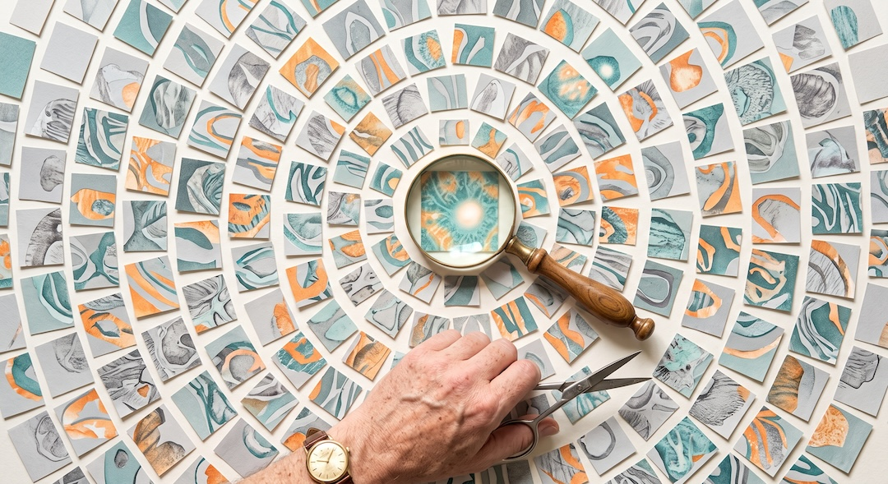
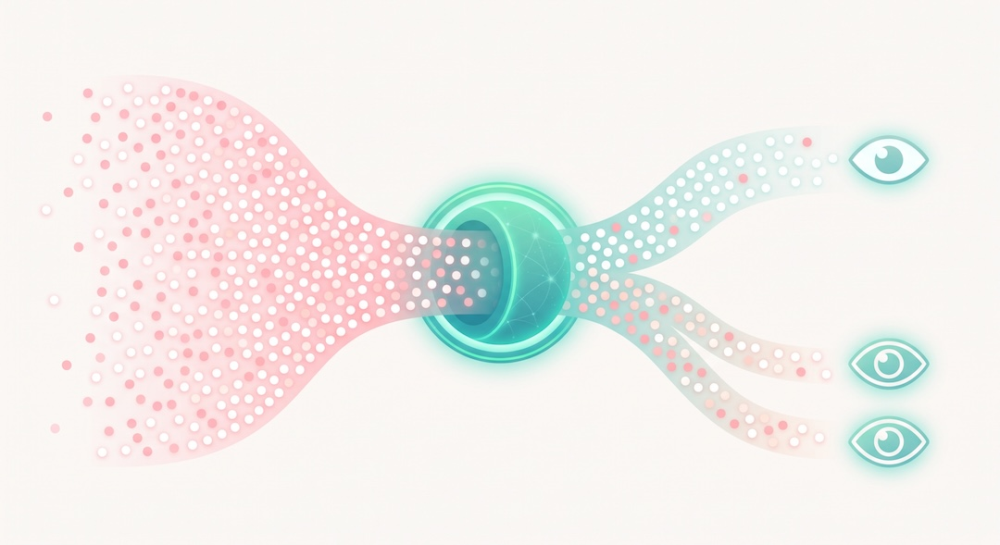
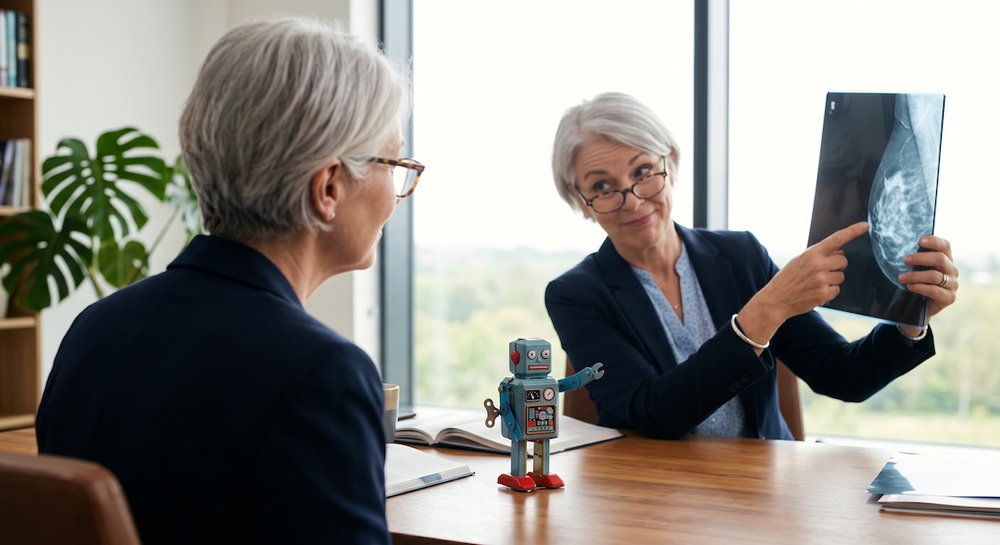
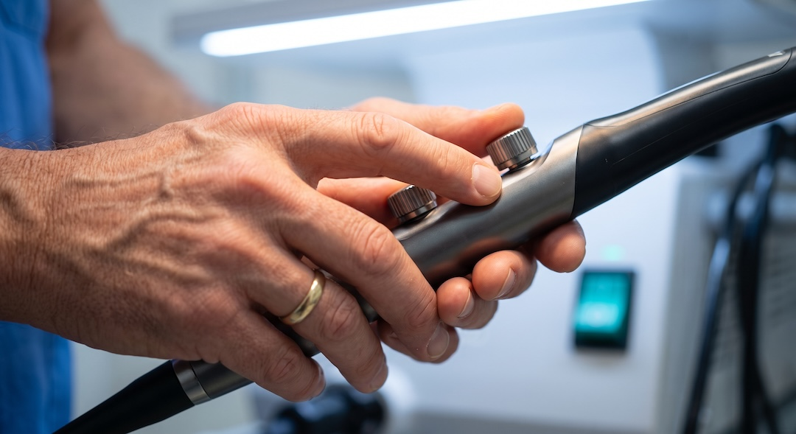
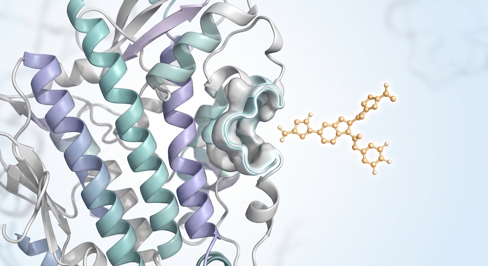

Słyszysz, że twoje zdjęcie „przejrzała sztuczna inteligencja”, i nie wiesz, czy się cieszyć, czy niepokoić. Znam to uczucie: z jednej strony nagłówki o maszynach, które widzą więcej niż lekarz, z drugiej strach, że nikt już nie patrzy na człowieka. Sprawdziłem, co mówią badania, a nie reklamy.
Szybka odpowiedź
AI w diagnostyce już pomaga: w dużym szwedzkim badaniu z randomizacją mammografia wspierana przez AI wykryła o 29 procent więcej raków piersi i ograniczyła liczbę raków przeoczonych między badaniami. Warunek jest jeden: ostatnie słowo ma lekarz, bo błędna podpowiedź maszyny potrafi go zmylić. Leki na raka zaprojektowane przez AI wciąż są na etapie badań.
Kluczowe wnioski
- W randomizowanym badaniu MASAI mammografia wspierana przez AI wykryła o 29% więcej raków i o 12% ograniczyła raki interwałowe.
- Błędna podpowiedź AI wyraźnie obniżała trafność ocen radiologów, także bardzo doświadczonych.
- Polskie badanie obserwacyjne sugeruje spadek wykrywalności gruczolaków bez AI po okresie pracy z AI.
- Leki odkryte z pomocą AI lepiej przechodzą fazę I, ale w fazie II osiągają wyniki zbliżone do tradycyjnych.
Co właściwie robi AI, gdy ogląda twoje badanie?
Algorytm diagnostyczny nie myśli jak lekarz. To program, który na ogromnej liczbie opisanych wcześniej obrazów nauczył się, jakie układy jasnych i ciemnych plamek częściej towarzyszą chorobie. Gdy dostaje twoje zdjęcie z badania, takiego jak RTG, tomografia lub rezonans, nie stawia diagnozy, tylko wylicza, jak bardzo obraz przypomina te, które kiedyś okazały się nowotworem.
To ważna różnica. Komunikat „wysokie ryzyko” znaczy tyle: ten obraz jest podobny do przypadków chorych, na których program się uczył. Jeśli te przypadki pochodziły z innego aparatu, innej grupy ludzi albo innego szpitala, podobieństwo może zwodzić. Dlatego każdy system trzeba sprawdzać tam, gdzie ma pracować, a nie tylko w laboratorium producenta.
Takich narzędzi jest już sporo. Amerykańska agencja FDA prowadzi publiczną listę wyrobów medycznych wykorzystujących AI. Według zestawień opartych na tej liście do marca 2026 r. było ich około 1500, a mniej więcej trzy czwarte dotyczyło radiologii. Innymi słowy: AI w medycynie to dziś przede wszystkim AI, która patrzy na obrazy.

Co pokazało największe badanie AI w mammografii?
Najmocniejszy dowód pochodzi ze Szwecji. W badaniu MASAI wzięło udział 106 tysięcy kobiet, losowo przydzielonych albo do zwykłego podwójnego odczytu mammografii przez dwóch radiologów, albo do odczytu wspieranego przez AI. To badanie z randomizacją, czyli najwyższa półka dowodów, a nie pokaz możliwości.
Jak to działało w praktyce? Program oceniał ryzyko na każdym zdjęciu. Mammografie o niskim ryzyku czytał jeden radiolog, a te o wyższym ryzyku dwóch. AI dodatkowo zaznaczała lekarzom podejrzane miejsca na zdjęciu. Dla samej pacjentki badanie wyglądało dokładnie tak samo jak zawsze.
Wyniki? Z pomocą AI wykryto o 29 procent więcej nowotworów, głównie małych i bez przerzutów do węzłów chłonnych. Radiolodzy mieli o 44 procent mniej pracy przy odczytach. Po dwóch latach obserwacji okazało się też, że między badaniami pojawiło się o 12 procent mniej raków interwałowych: 82 zamiast 93.
Raki interwałowe to te, które ujawniają się między dwiema rundami badań przesiewowych, choć poprzednia mammografia wyszła czysto. Zwykle są groźniejsze, więc ich liczba pokazuje, ile badanie realnie przeoczyło. W grupie z AI było też o 27 procent mniej agresywnych podtypów, a czułość wzrosła bez zwiększenia liczby fałszywych alarmów.
| Co mierzono | Wynik w grupie z AI |
|---|---|
| Wykryte nowotwory | o 29% więcej |
| Obciążenie radiologów odczytami | o 44% mniej |
| Raki interwałowe po 2 latach | 82 zamiast 93 (o 12% mniej) |
| Agresywne podtypy wśród raków interwałowych | o 27% mniej |
| Fałszywe alarmy | bez wzrostu |
Uczciwie trzeba dodać ograniczenia. Wynik dotyczy jednego konkretnego programu, jednego sposobu jego użycia i szwedzkiego systemu badań przesiewowych. Nie wiadomo jeszcze, czy kobiety z grupy AI rzadziej umrą na raka piersi, bo na taką odpowiedź potrzeba wielu lat obserwacji.

Czy komputer dobrze zinterpretował badanie?
Krótka odpowiedź brzmi: nie wiadomo, dopóki nie sprawdzi tego człowiek. AI myli się inaczej niż lekarz. Potrafi dostrzec coś, co umknęło oku, ale potrafi też z pełnym przekonaniem zaznaczyć niewinny cień. Jeszcze ważniejsze jest to, jak jej błąd wpływa na lekarza, który patrzy na ten sam obraz.
W 2023 r. niemieccy badacze pokazali 27 radiologom 50 mammografii z podpowiedziami rzekomego systemu AI. Część podpowiedzi była celowo błędna. Gdy podpowiedź była trafna, lekarze oceniali poprawnie około 80 procent zdjęć. Gdy była błędna, trafność spadała u niedoświadczonych do 19,8 procent, u średnio doświadczonych do 24,8 procent, a u bardzo doświadczonych do 45,5 procent.
To zjawisko ma nazwę: błąd automatyzacji. Ufamy maszynie, bo jest szybka, pewna siebie i zwykle ma rację. W tym eksperymencie nawet doświadczeni specjaliści dali się pociągnąć w złą stronę, choć słabiej niż młodsi koledzy. Ograniczenie jest jasne: to był test na 50 zdjęciach, a nie codzienna praca w pracowni.
Ciekawy szczegół: mniej doświadczeni radiolodzy byli mniej pewni własnych ocen niż starsi koledzy, co według autorów mogło czynić ich bardziej podatnymi na złe podpowiedzi. Najłatwiej dawali się przekonać wtedy, gdy maszyna błędnie sugerowała wyższą kategorię ryzyka, niż było naprawdę.
Autorzy zaproponowali konkretne zabezpieczenia: pokazywać lekarzowi, jak bardzo system jest pewny swojej oceny, uczyć radiologów, na jakiej zasadzie działa program, i dbać o to, by lekarz czuł się odpowiedzialny za własną decyzję. Mówiąc po ludzku: AI ma być drugą parą oczu, a nie ostatnim słowem.

Czy lekarz pracujący z AI może stracić wprawę?
Tu pojawia się wątek z Polski. Badanie przeprowadzono w czterech polskich ośrodkach wykonujących kolonoskopię. Sprawdzano, co dzieje się z lekarzami, którzy przez kilka miesięcy pracowali z programem AI wskazującym polipy w jelicie. Pytanie było proste: jak radzą sobie, kiedy program jest wyłączony?
Odsetek kolonoskopii bez AI, w których wykryto gruczolaka, spadł z 28,4 do 22,4 procent. Gruczolaki to zmiany, z których może rozwinąć się rak jelita grubego, a ich wykrywalność jest podstawową miarą jakości tego badania. Spadek o 6 punktów procentowych sugeruje, że część zmian, które wcześniej zostałyby znalezione, mogła zostać przeoczona.
W liczbach: przeanalizowano 795 kolonoskopii bez AI sprzed jej wprowadzenia i 648 po nim. Dla porównania w kolonoskopiach z włączonym AI wykrywalność wyniosła 25,3 procent, czyli mniej niż w tych ośrodkach bez AI przed jej wprowadzeniem. To nie dowód, ale sygnał, którego nie wolno zbyć wzruszeniem ramion.
Ograniczenia są poważne. To badanie obserwacyjne, porównujące okres przed wprowadzeniem AI i po nim, więc nie dowodzi przyczyny. Mogły się zmienić grupy pacjentów, obciążenie pracą albo inne warunki. Ale kierunek jest znajomy: gdy maszyna pilnuje za nas, sami łatwo zaczynamy pilnować słabiej.
Wniosek dla pacjenta nie brzmi „unikaj AI”. Brzmi raczej tak: dobra placówka mierzy wyniki swoich lekarzy zarówno z AI, jak i bez niej. Autorzy badania mówili wprost, że warto monitorować własną wykrywalność w obu trybach pracy, żeby wcześnie zauważyć niepokojące zmiany.

Jak AI szuka leków na nowotwory?
Szukanie leku przypomina dorabianie klucza do zamka, którego kształtu nie widać. Zamkiem jest białko w komórce nowotworowej, a kluczem cząsteczka, która ma się do niego dopasować i zablokować jego działanie. AI pomaga wskazać białko warte ataku, przewidzieć jego kształt i zaprojektować pasujące cząsteczki.
Przełomem okazało się przewidywanie kształtu białek. W 2020 r. Demis Hassabis i John Jumper z Google DeepMind pokazali model AlphaFold2, którym przewidziano strukturę praktycznie wszystkich około 200 milionów znanych białek. Korzysta z niego ponad dwa miliony badaczy ze 190 krajów, a w 2024 r. obaj dostali za to Nagrodę Nobla z chemii.
Problem był stary: od lat 70. naukowcy próbowali przewidzieć kształt białka na podstawie sekwencji aminokwasów i szło im to bardzo opornie. Drugą połowę tej samej Nagrody Nobla dostał David Baker za projektowanie zupełnie nowych białek, także takich, które mogą posłużyć jako leki i szczepionki.
Znajomość kształtu zamka nie daje jeszcze klucza. Skraca jednak etap, który wcześniej wymagał żmudnych badań laboratoryjnych nad każdym białkiem z osobna. Chemicy mogą szybciej odrzucać ślepe zaułki i wysyłać do laboratorium mniej kandydatów, za to lepiej dobranych. Ostateczny test i tak odbywa się na komórkach, zwierzętach i ludziach.
Onkologia jest w centrum tej gorączki. Według analizy opublikowanej w 2024 r. w czasopiśmie „Drug Discovery Today” mniej więcej połowa cząsteczek odkrytych z pomocą AI, które trafiły do badań klinicznych fazy I i II, to leki przeciwnowotworowe.

Ile leków odkrytych przez AI naprawdę działa?
Tu trzeba zdjąć różowe okulary. Wspomniana analiza policzyła, że do grudnia 2023 r. badania fazy I ukończyły 24 cząsteczki odkryte z pomocą AI, a 21 z nich przeszło je pomyślnie. To 80–90 procent, wyraźnie więcej niż historyczna średnia branży farmaceutycznej.
Faza I sprawdza jednak głównie bezpieczeństwo. Prawdziwy test skuteczności zaczyna się w fazie II i tam z 10 cząsteczek sukces odniosły 4, czyli około 40 procent. To mniej więcej tyle, ile osiągają leki odkrywane tradycyjnie. AI pomaga więc zaprojektować cząsteczkę, którą da się bezpiecznie podać, ale nie gwarantuje, że ta cząsteczka wyleczy chorobę.
Autorzy analizy policzyli też scenariusz na przyszłość: gdyby te trendy się utrzymały, szansa, że cząsteczka przejdzie wszystkie fazy badań, mogłaby wzrosnąć z 5–10 do 9–18 procent. To prognoza oparta na niewielkiej liczbie przypadków, a nie gotowy wynik.
Najdalej zaszedł lek, który wcale nie jest na raka. Rentosertib firmy Insilico Medicine powstał tak, że AI wskazała nowy cel w organizmie, a potem zaprojektowała cząsteczkę. W badaniu fazy 2a na 71 chorych z idiopatycznym włóknieniem płuc najwyższa dawka przez 12 tygodni zwiększyła natężoną pojemność życiową płuc średnio o 98,4 ml, a w grupie placebo spadła ona o 20,3 ml. Chorych podzielono na trzy grupy z różnymi dawkami i grupę placebo, po 17–18 osób w każdej.
To obiecujący sygnał, ale z małej grupy i krótkiej obserwacji. Głównym celem badania było bezpieczeństwo, a nie dowód skuteczności, a działania niepożądane występowały podobnie często jak przy placebo. Sami autorzy piszą, że lek wymaga większych i dłuższych badań.
Stan na październik 2026 r.: nie znalazłem potwierdzenia, by amerykańska FDA lub europejska EMA zarejestrowały lek, którego cel i cząsteczkę od początku wskazała i zaprojektowała AI. Kto dziś obiecuje lek na raka od AI w najbliższej aptece, sprzedaje nadzieję, a nie fakty.
Co z tego wynika dla ciebie po pięćdziesiątce?
Najważniejsze: AI działa tylko tam, gdzie badanie w ogóle się odbywa. Program, który w Szwecji wyłapywał więcej raków piersi, nie pomoże komuś, kto od lat odkłada mammografię albo kolonoskopię. Pierwszy krok jest więc staroświecki: iść na badania przesiewowe, do których się kwalifikujesz, i uporządkować z lekarzem także badania potrzebne po 50-tce.
Jeśli twoje badanie oceniano z pomocą AI, możesz zapytać lekarza, jak program był używany i kto ostatecznie ocenił zdjęcia. Opis podpisuje lekarz i to on powinien wytłumaczyć, co wynik znaczy dla ciebie. Wiedza z badania MASAI i eksperymentu z błędem automatyzacji mówi jasno: najlepiej działa duet, a nie sama maszyna.
Osobna sprawa to chatboty. Wklejenie wyniku do czatu może pomóc zrozumieć trudne słowa w opisie, ale taki czat nie jest wyrobem medycznym sprawdzonym na przypadkach takich jak twój. Traktuj go jak słownik, nie jak drugą opinię, a każdą niepokojącą interpretację zabierz do lekarza.
Czego jeszcze nie wiemy o AI w medycynie?
Uczciwy bilans wygląda tak: w diagnostyce obrazowej mamy już mocny dowód z dużego badania z randomizacją. W szukaniu leków mamy szybszy start i lepsze wyniki pierwszej fazy badań, ale wciąż brak dowodu, że AI zwiększa liczbę skutecznych terapii dla chorych. Tę samą zasadę — oddzielanie mechanizmu od wyniku ważnego dla pacjenta — stosujemy w analizie pytań o szczepionki mRNA i raka.
Otwarte pytania są konkretne. Czy wyniki ze Szwecji powtórzą się w innych krajach i z innymi programami? Jak chronić lekarzy przed błędem automatyzacji i utratą wprawy? Czy przewaga AI w fazie I przełoży się na leki, które przedłużają życie, a nie tylko zmniejszają guz na zdjęciu? Odpowiedzą na to kolejne badania, nie reklamy.
Do tego czasu rozsądna postawa to ani zachwyt, ani strach. W dobrze zaprojektowanym systemie AI już teraz pomaga wykrywać więcej nowotworów. Przy zbyt ślepym zaufaniu może przepuścić to, co doświadczony lekarz kiedyś by zauważył. Różnicę robi człowiek, który wie, kiedy maszynie nie wierzyć.
Najczęściej zadawane pytania
Czy sztuczna inteligencja zastąpi radiologa?
Dostępne dowody na to nie wskazują. W szwedzkim badaniu MASAI AI przejęła część pracy i radiolodzy mieli o 44 procent mniej pracy przy odczytach, ale każdą mammografię oceniał co najmniej jeden lekarz. Eksperyment z 2023 r. pokazał przy tym, że błędna podpowiedź AI obniża trafność ocen lekarzy, więc nadzór człowieka pozostaje kluczowy.
Czy AI znalazła już lek na raka?
Nie w sensie leku zarejestrowanego i dostępnego dla pacjentów — na październik 2026 r. nie znalazłem takiego potwierdzenia. Około połowa cząsteczek odkrytych z pomocą AI, które weszły do badań klinicznych, to leki onkologiczne, ale w fazie II skuteczne okazało się około 40 procent z nich, podobnie jak przy metodach tradycyjnych.
Czy AI może się pomylić przy ocenie badania?
Tak. System może zaznaczyć zmianę, której nie ma, albo przeoczyć istotny obraz, zwłaszcza gdy trafia na dane inne niż te użyte podczas uczenia. Badanie radiologów pokazało też, że błędna sugestia AI może obniżać trafność ich ocen. Dlatego wynik musi interpretować lekarz w kontekście całego badania i sytuacji pacjenta.
Czy wynik badania ocenionego przez AI trzeba omówić z lekarzem?
Tak. AI jest narzędziem wspierającym, a nie osobą stawiającą rozpoznanie i układającą plan leczenia. Lekarz ocenia jakość badania, objawy, wcześniejsze wyniki i znaczenie ewentualnej podpowiedzi algorytmu. Nie zmieniaj leczenia ani terminu dalszej diagnostyki wyłącznie na podstawie komunikatu programu lub czatu.
Źródła
- The Lancet – Lång K i wsp., Interval cancer, sensitivity, and specificity comparing AI-supported mammography screening with standard double reading without AI in the MASAI study, randomizowane badanie, 2026
- Radiology – Dratsch T i wsp., Automation Bias in Mammography: The Impact of Artificial Intelligence BI-RADS Suggestions on Reader Performance, 2023
- The Lancet Gastroenterology & Hepatology – Budzyń K i wsp., Endoscopist deskilling risk after exposure to artificial intelligence in colonoscopy, badanie wieloośrodkowe obserwacyjne, 2025
- Drug Discovery Today – Jayatunga MKP i wsp., How successful are AI-discovered drugs in clinical trials? A first analysis and emerging lessons, 2024
- Nature Medicine – Xu Z i wsp., A generative AI-discovered TNIK inhibitor for idiopathic pulmonary fibrosis: a randomized phase 2a trial, 2025 (rekord PubMed)
- Królewska Szwedzka Akademia Nauk – komunikat prasowy, Nagroda Nobla z chemii 2024 (AlphaFold, projektowanie białek)
- U.S. Food and Drug Administration – Artificial Intelligence-Enabled Medical Devices, publiczna lista wyrobów medycznych z AI
- FDA, Health Canada i MHRA – Transparency for Machine Learning-Enabled Medical Devices: Guiding Principles
Uwaga: Artykuł ma charakter informacyjny i edukacyjny. Nie zastępuje konsultacji lekarskiej, diagnozy ani leczenia.